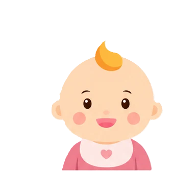
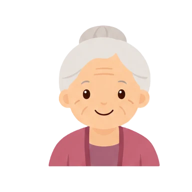
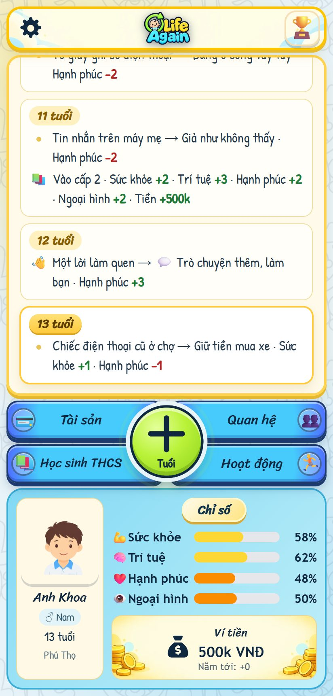
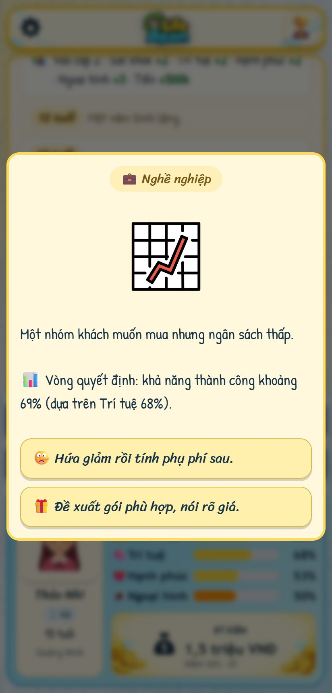

Sống thêm một đời nữa, từng năm một.
Life Again là game mô phỏng cuộc đời bằng tiếng Việt. Bạn chào đời ở một tỉnh thành, đi học, chọn nghề, yêu thương, làm giàu hay lỡ bước, rồi già đi. Mỗi lần bấm + Tuổi là một năm trôi qua, và lựa chọn của bạn viết tiếp nhật ký.
Miễn phí, không cần tài khoản. Dữ liệu lưu ngay trên máy của bạn.

2 tuổi- 8 tuổi
- 16 tuổi
- 25 tuổi
- 42 tuổi

78 tuổi


Mỗi năm là một trang nhật ký
Mỗi năm có thể có một tình huống cần bạn quyết định. Không có lựa chọn nào miễn phí: thứ bạn được ở năm nay có khi là thứ bạn trả ở mười năm sau.
- 1 tuổi Tiếng gọi đầu tiên: gọi “bà”. Hạnh phúc +2
- 12 tuổi Mặt nổi mụn, nghe mẹ chờ mụn tự hết. Ngoại hình −1
- 13 tuổi Chiếc nhẫn trong hộp thiếc: nhận và giữ kín. Kỷ vật mới
Trong một đời, bạn có thể
-
Học vấn và nghề nghiệp
Thi chuyển cấp, chọn khối, du học, vào nghề rồi lên từng bậc. Có nghề đi tới bậc cao nhất, có nghề không.
-
Quan hệ
Cha mẹ, bạn bè, người yêu, vợ chồng, con cái. Người thân nhớ cách bạn đối xử với họ.
-
Tài sản
Kiếm tiền, mua nhà, mua xe, nuôi thú, vay nợ. Ví tiền đi theo bạn tới cuối đời.
-
Hoạt động
Làm thêm, du lịch, chăm vườn, phá án thám tử, đấu giá đồ cổ và nhiều trò chơi nhỏ khác.
Khi hành trình khép lại, cuộc đời đó được ghi vào Sổ các cuộc đời cùng danh hiệu và những dấu ấn bạn đã khám phá. Đời sau, bạn lên một chuyến xe khác.
Cài Life Again vào máy
Cài trực tiếp từ website trên máy tính, Android và iPhone, không cần tải bộ cài riêng. Sau khi cài, mở Life Again từ biểu tượng trên máy để chơi. Lần đầu cần có mạng để tải game.
Bạn có mã chuyển dữ liệu đang chờ. Cài và mở game trước khi nhận; nếu mã hết hạn, hãy tạo mã mới trên máy cũ.
Bạn đã có dữ liệu Life Again trong trình duyệt này. Lưu một tệp sao lưu trước khi chuyển sang ứng dụng, nhất là trên iPhone.
Bạn đang mở Life Again từ biểu tượng đã cài. Mở game.
Trình duyệt của bạn hỗ trợ cài bằng một lần bấm.
Đã cài xong. Mở Life Again từ biểu tượng trên màn hình chính hoặc trong danh sách ứng dụng.
- Mở trang game bằng Chrome. Mở trong Zalo hay Facebook thì bấm “Mở bằng trình duyệt” trước.
- Bấm nút ⋮ ở góc trên bên phải.
- Chọn “Cài đặt ứng dụng” hoặc “Thêm vào màn hình chính”.
- Bấm “Cài đặt”. Biểu tượng Life Again xuất hiện trên màn hình chính.
Dùng Samsung Internet: bấm ≡, chọn “Thêm trang vào”, rồi “Màn hình chính”.
- Mở trang game bằng Safari. Mở trong Zalo hay Facebook thì chọn “Mở trong Safari” trước.
- Bấm nút Chia sẻ ở thanh dưới (iPad: góc trên). Không thấy nút thì bấm ⋯ trước.
- Chọn “Thêm vào MH chính” (Add to Home Screen). Kéo danh sách xuống nếu chưa thấy.
- Bật “Mở dưới dạng ứng dụng web” nếu có, rồi bấm “Thêm”. Mở game từ biểu tượng mới trên màn hình chính.
Nếu ứng dụng chưa có cuộc đời cũ, dùng tệp sao lưu và mục Chuyển thiết bị để nhận lại. Không xóa dữ liệu Safari trước khi đã kiểm tra bản lưu trong ứng dụng.
- Mở trang này bằng Chrome hoặc Edge trên máy tính.
- Bấm “Cài Life Again ngay” nếu có nút ở trên; hoặc dùng biểu tượng cài ứng dụng ở thanh địa chỉ hay mục cài ứng dụng trong menu trình duyệt.
- Xác nhận “Cài đặt”. Mở Life Again từ biểu tượng ứng dụng hoặc menu Start.
Trên Mac với Safari hỗ trợ ứng dụng web: chọn Tệp → Thêm vào Dock. Nếu trình duyệt hiện tại không có mục cài, hãy mở trang bằng Chrome hoặc Edge.
Chơi khi không có mạng
Lần đầu mở game khi có mạng, Life Again tự lưu sẵn mọi thứ cần để chơi. Từ lần sau, trên xe buýt, máy bay hay lúc mất Wi-Fi, bạn vẫn mở game và chơi tiếp bình thường.
- Chạy được không cần mạng: bến xe, tạo nhân vật, cả cuộc đời, các trò chơi nhỏ, sổ các cuộc đời, lưu tiến trình.
- Cần mạng: tạo và nhận mã chuyển máy, ảnh minh họa của sự kiện bạn chưa từng gặp (offline thì sự kiện vẫn hiện, chỉ thiếu ảnh).
- Cập nhật: khi game báo có bản mới, dùng nút “Cập nhật bản mới” ở bến xe hoặc Cài đặt. Tiến trình được lưu trước khi tải lại.
Chuyển sang máy khác
Dữ liệu chỉ nằm trên máy bạn đang chơi. Đổi điện thoại hay muốn chơi tiếp trên máy tính thì mang theo cả cuộc đời đang dở, sổ các cuộc đời, vé và thành tựu bằng một mã 6 ký tự.
Trên máy cũ
- Mở Life Again, ở bến xe bấm 📲 Chuyển thiết bị.
- Chọn Gửi đi, bấm Tạo mã chuyển.
K7M2QX
Mã dùng được một lần, trong 10 phút.
Trên máy mới
- Mở Life Again, ở bến xe bấm 📲 Chuyển thiết bị.
- Chọn Nhận về, nhập mã rồi bấm Nhận dữ liệu.
- Xem lại tóm tắt, bấm Nhận và mở lại game.
Dữ liệu game đang có trên máy mới sẽ được thay bằng dữ liệu nhận về.
Không có mạng? Ở tab Gửi đi, bấm Lưu tệp sao lưu, gửi tệp sang máy mới qua Zalo, email hay cáp, rồi chọn Nhận về → Mở tệp sao lưu. Thỉnh thoảng lưu một tệp như vậy cũng là cách giữ an toàn cho dữ liệu nếu máy hỏng hay lỡ xóa dữ liệu trình duyệt.
Câu hỏi thường gặp
Game có mất tiền không?
Không. Game miễn phí, vé để bắt đầu một cuộc đời mới cũng miễn phí và nhận được không giới hạn.
Dữ liệu của tôi được lưu ở đâu?
Ngay trong trình duyệt trên máy bạn, không gửi lên máy chủ. Ngoại lệ duy nhất là khi bạn tạo mã chuyển máy: dữ liệu được giữ tạm trên máy chủ tối đa 10 phút và bị xóa ngay khi máy mới nhận.
Xóa dữ liệu trình duyệt hay gỡ app thì sao?
Dữ liệu game sẽ mất theo. Trước khi làm vậy, hãy lưu một tệp sao lưu hoặc chuyển sang máy khác.
Chơi trên hai máy cùng lúc được không?
Mỗi máy giữ dữ liệu riêng, không tự đồng bộ. Muốn chơi tiếp ở máy khác thì chuyển dữ liệu sang; máy cũ vẫn giữ bản của nó, nên chơi tiếp ở máy cũ sẽ tạo ra một nhánh đời khác.
Cài rồi mà không thấy biểu tượng?
Trên Android, tìm Life Again trong danh sách ứng dụng rồi kéo ra màn hình chính. Trên iPhone, kiểm tra các trang màn hình chính khác hoặc Thư viện ứng dụng.